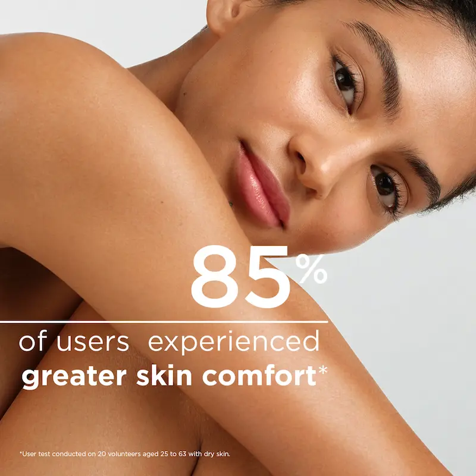
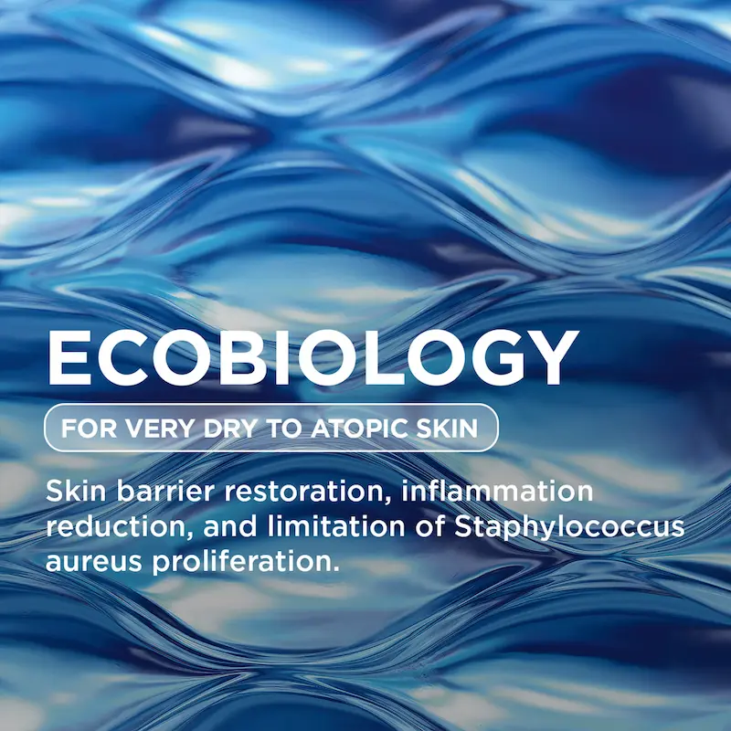

Bioderma Atoderm Gel Moussant: curățare delicată pentru pielea uscată și sensibilă
Recenzie independentă. Produsul nu este sponsorizat.
Descoperim de ce acest gel este considerat unul dintre cele mai bune produse pentru îngrijirea zilnică a pielii uscate și sensibile: surfactanții blânzi, componentele hidratante și absența substanțelor agresive lucrează împreună pentru a elimina impuritățile fără a compromite bariera de protecție a pielii. În condițiile climatului din România și Moldova, produsul ajută la menținerea confortului, hidratării și fineții pielii după spălare.

Bioderma Atoderm Gel Moussant
Gel spumant delicat pentru curățarea pielii uscate și sensibile, fără senzația de uscăciune sau strângere. Formula cu glicerină și apă termală îndepărtează blând impuritățile, menține echilibrul hidric al pielii și reduce iritațiile. Produsul este potrivit pentru utilizarea zilnică, oferind confort și finețe chiar și pielii deshidratate, protejând bariera cutanată în condiții de aer rece sau uscat.
Curățare delicată pentru pielea uscată și sensibilă, care nu compromite bariera de protecție. Formula cu surfactanți blânzi și componente hidratante, precum glicerină și apă termală, îndepărtează impuritățile cu blândețe, reduce senzația de strângere și menține confortul pielii chiar și la utilizarea zilnică, în condițiile climatului din România și Moldova.
De ce merită atenția acest produs?
Bioderma Atoderm Gel Moussant este un gel de curățare blând, conceput pentru îngrijirea pielii uscate și sensibile. Formula sa nu afectează bariera de protecție a pielii, curăță delicat și ajută la menținerea nivelului optim de hidratare.
Spre deosebire de produsele de curățare agresive, nu provoacă senzația de uscăciune sau piele care „ține” după utilizare și este potrivit pentru uz zilnic, atât pentru față, cât și pentru corp. Ideal pentru pielea sensibilă și pentru întreaga familie.


Textură și prima utilizare
Spre deosebire de gelurile și spumele agresive, care pot usca pielea, Bioderma Atoderm Gel Moussant are o textură ușoară și spumoasă. Gelul se distribuie ușor pe piele, creează o spumă fină și se clătește rapid, fără a lăsa senzația de strângere.
Chiar după prima utilizare, pielea se simte mai hidratată, moale și confortabilă. Produsul este potrivit pentru utilizarea zilnică, în special în condițiile de aer rece, vântos sau uscat din România și Moldova, când pielea necesită o curățare delicată fără a afecta bariera protectoare.
Analiza compoziției: Ce conține?
Baza formulei constă în surfactanți blânzi (Coco-Glucoside, Sodium Cocoyl Isethionate), care îndepărtează delicat impuritățile și machiajul, fără a compromite bariera de protecție a pielii. Datorită acestui lucru, gelul este potrivit pentru pielea uscată, sensibilă și iritată, minimizând riscul de senzație de strângere și iritație.
Componentele hidratante suplimentare, precum glicerina și apa termală Avène, ajută la menținerea hidratării, calmează pielea și oferă confort după curățare. Textura ușoară și spumoasă face procesul de curățare plăcut și sigur pentru utilizarea zilnică în condițiile climatului din România și Moldova.
Cum să folosești pentru efect maxim
Bioderma Atoderm Gel Moussant poate fi utilizat zilnic, dimineața și seara. Aplică o cantitate mică de gel pe pielea umedă, masează ușor până la formarea unei spume delicate și clătește cu apă călduță. Produsul nu necesită clătire suplimentară și nu lasă senzația de strângere.
Sfat pentru un îngrijire confortabilă: în zonele deosebit de uscate sau sensibile, gelul poate fi folosit ca bază blândă înainte de aplicarea unei creme sau balsam hidratant, pentru a reduce iritația și a proteja bariera pielii. Această abordare este deosebit de utilă în sezonul rece și în condițiile încălzirii interioare din România și Moldova.
Cui NU se potrivește produsul?
Bioderma Atoderm Gel Moussant este creat pentru pielea uscată, sensibilă și predispusă la iritații. Persoanelor cu pielea grasă sau mixtă, cu exces de sebum și pori dilatați, textura poate părea insuficient de purificatoare sau prea blândă.
Dacă obiectivul principal este controlul sebumului sau tratarea acneei, este mai bine să alegi produse cu efect seborreglator. Gelul Atoderm Gel Moussant este destinat curățării delicate, menținerii echilibrului pielii și protecției barierei cutanate, nu reglării producției de sebum.
Unde poți cumpăra Bioderma Atoderm Gel Moussant în Chișinău?
Gama Bioderma Atoderm este disponibilă în farmaciile din Moldova. Gelul poate fi găsit în rețelele Farmacia Familiei, Hippocrates și Felicia, precum și pe platformele online ale farmaciilor.
Recomandăm verificarea disponibilității și prețului pentru Atoderm Gel Moussant online înainte de achiziție. În Chișinău se desfășoară frecvent promoții la brandurile dermatologice, mai ales în sezonul rece, când pielea are nevoie de curățare blândă și hidratare.
Unde poți găsi Bioderma Atoderm Gel Moussant?
Dacă ești în căutarea unui gel de curățare delicat pentru pielea uscată și sensibilă, Bioderma Atoderm Gel Moussant poate fi găsit în farmacii și magazine online din Romania.
Verifică disponibilitatea și prețul*Linkul este oferit în scop informativ. În cazul unui parteneriat, aici va fi plasat link direct către produs.
Întrebări frecvente
Pielea va rămâne lipicioasă sau întinsă după curățare?
Nu, Bioderma Atoderm Gel Moussant curăță delicat, fără a afecta bariera de protecție a pielii. Pielea rămâne hidratată și confortabilă după spălare, fără senzație de uscăciune sau lipici.
Se poate folosi gelul pe piele sensibilă sau iritată?
Da, produsul este conceput pentru curățare delicată a pielii sensibile și deshidratate. Atoderm Gel Moussant reduce disconfortul și protejează bariera pielii, fără a provoca iritații.
Cât de repede pielea simte confort după curățare?
Confortul se simte imediat după clătire. Formula delicată face ca pielea să fie moale, hidratată și mai puțin reactivă.
Se poate folosi gelul zilnic?
Da, Bioderma Atoderm Gel Moussant este potrivit pentru curățarea delicată zilnică și menține pielea hidratată și confortabilă, chiar și în condiții de aer uscat și temperaturi variabile.
Este potrivit produsul pentru copii?
Da, gelul este hipoalergenic și potrivit pentru întreaga familie, inclusiv pentru bebeluși. Curăță delicat pielea, fără a-i afecta bariera naturală.